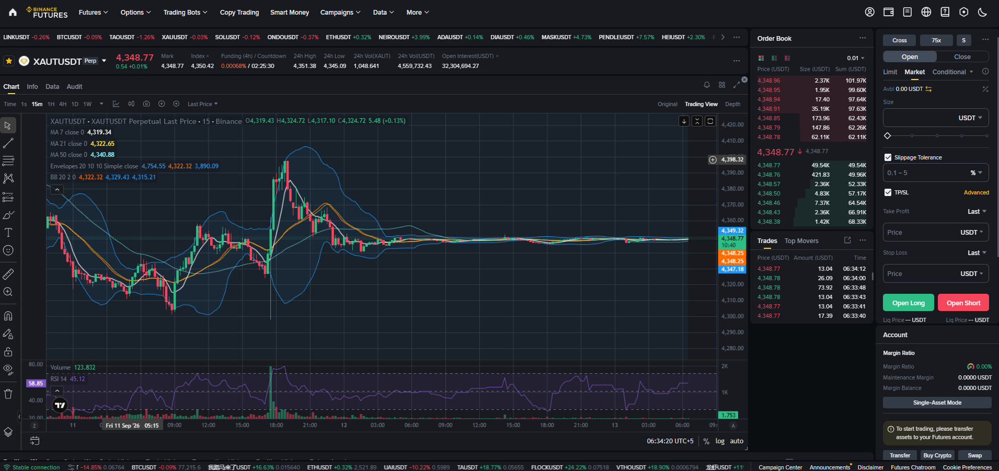

Futures بائننس کا سب سے طاقتور ٹریڈنگ ٹول ہے۔ اس میں آپ اصل کوائن کے بغیر، صرف قیمت کی حرکت پر — اوپر (Long) اور نیچے (Short) دونوں سمتوں میں — لیوریج کے ساتھ ٹریڈ کرتے ہیں۔ طاقت بھی زیادہ، خطرہ بھی زیادہ۔

Futures = ایک کنٹریکٹ (معاہدہ) جو آپ کو قیمت کی حرکت پر منافع/نقصان کا حق دیتا ہے — بغیر اصل کوائن کے۔
| پہلو | Spot | Futures |
|---|---|---|
| ملکیت | اصل کوائن آپ کا | نہیں — صرف کنٹریکٹ |
| سمت | صرف Buy | Long + Short دونوں |
| لیوریج | نہیں (1x) | ✅ 1x سے زیادہ |
| خطرہ | سرمایہ محدود | Liquidation تک |
| قسم | میعاد | وضاحت |
|---|---|---|
| Perpetual (PERP) | کوئی نہیں | ہمیشہ کھلا رہتا ہے؛ Funding Rate سے Spot قیمت کے قریب بندھا رہتا ہے — سب سے عام |
| Quarterly | 3 ماہ | تاریخ پر ختم (Delivery) |
| Biannual/دیگر | 6 ماہ وغیرہ | کم عام |
💡 اہم: اکثر نئے صارف "Futures = مستقبل میں ڈیلیوری" سمجھتے ہیں، مگر بائننس پر سب سے زیادہ مستعمل Perpetual Futures ہے جس کی کوئی میعاد نہیں — آپ جتنی دیر چاہیں پوزیشن کھلی رکھ سکتے ہیں (بشرطِ Funding اور Margin)۔
آپ USDT/USDC کو Margin (ضمانت) بناتے ہیں؛ منافع/نقصان بھی USDT میں۔
Margin : 1,000 USDT
Leverage : 10x
Position : ~10,000 USDT مالیت
P&L : USDT میںآپ BTC/ETH جیسے کوائن کو Margin بناتے ہیں؛ منافع/نقصان اُسی کوائن میں۔
Margin : 0.02 BTC
Leverage : 10x
Position : ~0.2 BTC مالیت
P&L : BTC میں| فیچر | USDⓈ-M (USDM) | COIN-M (COINM) |
|---|---|---|
| بیس اثاثہ | USDT/USDC | BTC/ETH وغیرہ |
| زیادہ سے زیادہ لیوریج | جوڑے پر منحصر (کئی 100x تک) | عموماً کم (بہت سے جوڑے 100x تک نہیں) |
| P&L کی کرنسی | USDT | مقامی کوائن |
| سمجھنے میں | آسان | پیچیدہ |
| کس کے لیے | نئے صارفین (توصیہ) | تجربہ کار |
💡 نئے صارفین کے لیے: ہمیشہ USDM سے شروع کریں — حساب اور سمجھ آسان۔
Funding Rate = Perpetual Futures میں Long اور Short پوزیشنوں کے درمیان ادا ہونے والی دوری رقم، جو کنٹریکٹ کی قیمت کو Spot قیمت کے قریب رکھتی ہے۔
| آپ کی پوزیشن | مثبت Funding | منفی Funding |
|---|---|---|
| Long | ادا کریں گے | موصول کریں گے |
| Short | موصول کریں گے | ادا کریں گے |
عام طور پر ہر 8 گھنٹے (00:00، 08:00، 16:00 UTC) — مگر کچھ کنٹریکٹس پر 4 گھنٹے یا دیگر وقفے بھی ہو سکتے ہیں۔
Position : 10,000 USDT (Long)
Funding Rate : +0.01%
Payment : 10,000 × 0.01% = 1.00 USDT
→ آپ (Long) Short کو 1.00 USDT ادا کریں گے (ہر 8 گھنٹے)💡 طویل مدت تک پوزیشن کھلی رکھنے پر Funding کئی بار لگتا ہے — یہ منافع کا حصہ کھا سکتا ہے۔
قیمت بڑھنے کی توقع → Buy کریں → بڑھ کر بیچیں → منافع۔
Long BTC @ 96,000 → بند @ 100,000
Movement per BTC = +4,000 USDT (لیوریج سے کئی گنا)قیمت گرنے کی توقع → قرض پر بیچیں → سستی پر واپس خریدیں → منافع۔
Short BTC @ 96,000 → بند @ 92,000
Movement per BTC = +4,000 USDT| مارکیٹ رجحان | حکمتِ عملی |
|---|---|
| Uptrend | Long |
| Downtrend | Short |
| Range | نچے سے Buy، اوپر سے Sell |
قدم 1: Trade ▼ → Futures کھولیں اور USDⓈ-M Perpetual منتخب کریں
قدم 2: جوڑا منتخب کریں (مثلاً BTC/USDT)
قدم 3: Transfer سے Spot والٹ سے Futures والٹ کو USDT منتقل کریں
قدم 4: لیوریج سیٹ کریں (شروع میں 2x–3x)، Isolated منتخب کریں
قدم 5: Order Entry سے ٹریڈ لگائیں — Long کے لیے Buy، Short کے لیے Sell
قدم 6: پوزیشن پر TP/SL لگائیں
قدم 7: نیچے Positions ٹیب میں Unrealized P&L اور Liquidation Price دیکھیں
لیوریج = آپ کے سرمائے سے کتنی گنا بڑی پوزیشن ممکن ہے۔ ساتھ ساتھ، لیوریج بڑھنے سے Liquidation قریب آ جاتی ہے۔
| لیوریج | لگ بھگ محفوظ فاصلہ (تصوراتی) | Risk |
|---|---|---|
| 1x | ~100% | بہت کم |
| 2x | ~50% | کم |
| 5x | ~20% | درمیانہ |
| 10x | ~10% | زیادہ |
| 20x | ~5% | بہت زیادہ |
| 50x+ | ~2% یا کم | 🚨 انتہائی خطرناک |
Liquidation (Long) ≈ Entry × (1 − 1/Leverage)
مثال (5x، Entry $96,000) ≈ $96,000 × 0.8 ≈ $76,800
⚠️ یہ فقط تصوراتی ہے — اصل قیمت Maintenance Margin، فیس اور مارکیٹ پر منحصر ہے۔💡 بائننس ہر پوزیشن کے لیے اصل Liquidation Price خود دکھاتا ہے — وہی معتبر ہے۔
مرحلہ 1: Futures → USDⓈ-M Perpetual کھولیں
مرحلہ 2: Funding Rate دیکھیں — مثبت یا منفی؟
مرحلہ 3: BTC/USDT چارٹ سے رجحان سمجھیں
مرحلہ 4: Isolated، 2x لیوریج کے ساتھ چھوٹی Long کھولیں
مرحلہ 5: SL = Entry − 2%، TP = Entry + 4% لگائیں
مرحلہ 6: Positions ٹیب میں P&L اور Funding دیکھیں
مرحلہ 7: پوزیشن بند کر کے سب نوٹ کریں
فیوچرز ایک طاقتور اوزار ہے، مگر دو دھاری تلوار۔ لیوریج منافع بھی بڑھاتی ہے اور نقصان بھی۔ سب سے اہم دو چیزیں: رسک مینجمنٹ اور صبر۔
کم لیوریج، Isolated Margin، ہر ٹریڈ پر SL — اور پہلے Demo۔ یہی چار اصول آپ کو برباد ہونے سے بچائیں گے۔